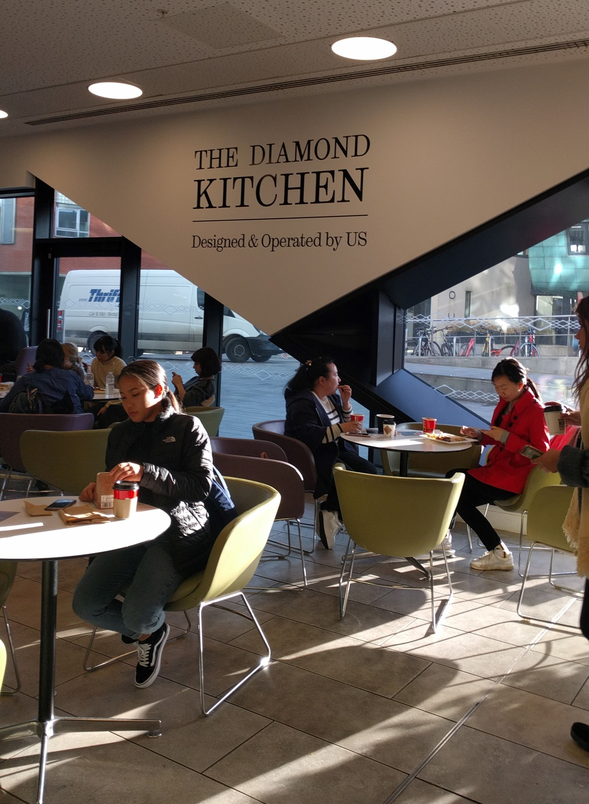

The Diamond Café/Kitchen
The Diamond Café is a conveniently located area to get food quickly. Located just to the left of the main reception on the ground floor, there are a good number of spaces to sit and eat with a few friends and places to eat individually.
There’s a small island in the centre of the Café where you can order from a range of hot drinks, such as a hot chocolate or a mocha. There’s even a range of festive drinks at Christmas time. The kitchen is located opposite the island, where you can order from a small range of freshly prepared meals, every day.

There is a wide variety in the meals offered each day, from Jacket Potatoes to Sri Lankan Chicken Curry. We’d personally recommend the Diamond Wrap, which will always go down a treat.

If you don’t fancy any of the meals on offer, there’s also a very large variety of sandwiches, drinks and snacks on offer too. All in typical meal-deal fashion.